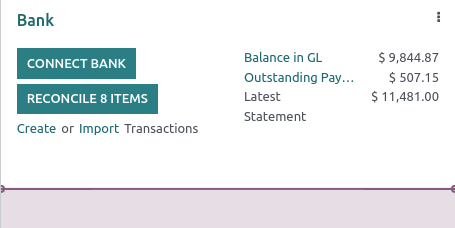
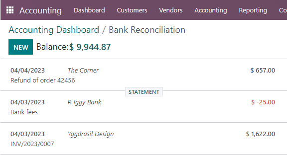

Transactions¶
Importing transactions from your bank statements allows keeping track of bank account transactions and reconciling them with the ones recorded in your accounting.
Bank synchronization automates the process. However, if you do not want to use it or if your bank is not yet supported, other options exist:
Import bank transactions delivered by your bank;
Register bank transactions manually.
Note
Grouping transactions by statement is optional.
Import transactions¶
Odoo supports multiple file formats to import transactions:
SEPA recommended Cash Management format (CAMT.053);
Comma-separated values (.CSV);
Open Financial Exchange (.OFX);
Quicken Interchange Format (.QIF);
Belgium: Coded Statement of Account (.CODA).
To import a file, go to the Accounting Dashboard, and in the Bank journal, click on Import Transactions.
Next, select the file and upload it.
After setting the necessary formatting options and mapping the file columns with their related Odoo fields, you can run a Test and Import your bank transactions.
See also
Register bank transactions manually¶
You can also record your bank transactions manually. To do so, go to Accounting Dashboard, click on the Bank journal, and then on New. Make sure to fill out the Partner and Label fields to ease the reconciliation process.
Statements¶
A bank statement is a document provided by a bank or financial institution that lists the transactions that have occurred in a particular bank account over a specified period of time.
In Odoo Accounting, it is optional to group transactions by their related statement, but depending on your business flow, you may want to record them for control purposes.
Important
If you want to compare the ending balances of your bank statements with the ending balances of your financial records, don’t forget to create an opening transaction to record the bank account balance as of the date you begin synchronizing or importing transactions. This is necessary to ensure the accuracy of your accounting.
To access a list of statements, go to your Accounting Dashboard, click on the vertical ellipsis (⋮) button next to the bank or cash journal you want to check, then on Statements
Statement creation from the kanban view¶
Open the bank reconciliation view by clicking on the name of the bank journal, and identify the transaction corresponding to the last transaction of your bank statement. Click on the STATEMENT button when hovering on the upper separator line.
Fill out the statement’s details and save. The newly created statement includes the previous transactions following the last statement.
Statement creation from the list view¶
Open the list of transactions by clicking on the name of the bank journal and switching to the list view. Select all the transactions corresponding to the bank statement, and, in the Statement column, select an existing statement or create a new one by typing its reference, clicking on Create and edit…, filling out the statement’s details, and saving.